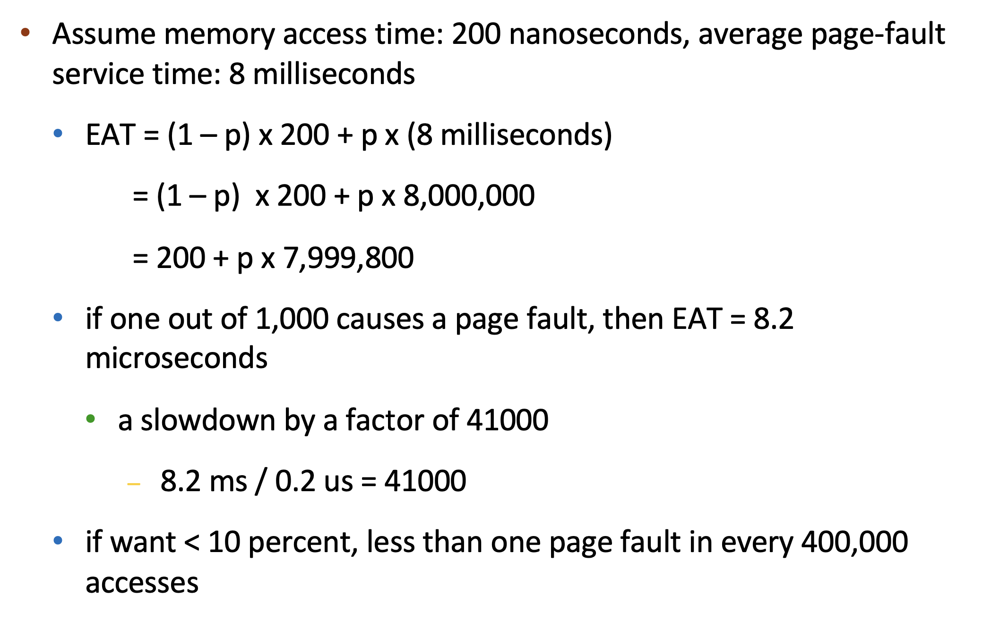

Lecture 11 - Virtual Memory¶
Demand Paging¶
Demand paging brings a page into memory only when it is demanded
- demand means access (read/write)
- if page is invalid (error) ➠ abort the operation [segmentation fault]
- if page is valid but not in memory ➠ bring it to memory
- Memory here means physical memory
- This is called page fault
- via swapping for swapped pages
- via mapping for new page
- no unnecessary I/O, less memory needed, slower response, more apps
What causes page fault? -- User space program accesses an address

- Kernel 会直接分配，不回lazy allocation
Which hardware issues page fault? -- MMU

- !Use VM area struct to record whether the page "SHOULD" be in memory -- demand paging
- If not in vm_area_struct, then it is segementation fault
- Also, If 权限不对，也是 segmentation fault
- In Linux, vm_area_struct : 平衡树
Who handles page fault? -- Operating system

- [MAJOR PAGE FAULT] Data 和 Text段是 file-backed -- Above Scenerio
- [MINOR PAGE FAULT] 如果是stack/heap发生的falut : 3, 4都不会发生
First reference to a non-present page will trap to kernel: page fault
Operating system looks at memory mapping to decide:
- invalid reference ➠ deliver an exception to the process : Via check vma in Linux
- valid but not in physical memory ➠ bring in
- get an empty physical frame
- bring page into frame via disk operation [Schedule I/O,Sleep on Disk]
- set page table entry to indicate the page is now in memory
- restart the instruction that caused the page fault
Suppose we have a page fault when access a static linked library, if ELF entry is 0xaaaa...
Is there a "demand segmenting?" -- No, 粒度太大了 一次fault就把整个segment都load进来了
Page Fault - swapper¶
- Pre-Paging ➠ bring in multiple pages at once 空间换时间
Page Fault – Get Free Frame¶

Stages in Demand Paging – Worse Case¶
- Trap to the operating system
- Save the user registers and process state
- Determine that the interrupt was a page fault
- 3.1 Check that the page reference was legal
- Find a free frame
- Determine the location of the page on the disk, issue a read from the disk to the free frame:
- 5.1 Wait in a queue for this device until the read request is serviced
- 5.2 Wait for the device seek and/or latency time
- 5.3 Begin the transfer of the page to a free frame
- While waiting, allocate the CPU to other process
- Receive an interrupt from the disk I/O subsystem (I/O completed)
- 7.1 Determine that the interrupt was from the disk
- 7.2 Mark page fault process ready
- Wait for the CPU to be allocated to this process again
- 8.1 Save registers and process state for other process
- 8.2 Context switch to page fault process
- Correct the page table, mapping new frame
- Return to user: restore the user registers, process state, and new page table, and then resume the interrupted instruction

Overhead -- Context switch
Demand Paging: EAT¶
Effective Access Time (EAT) = \((1-p) \times t_{memory} + p \times(t_{page \ fault\ overhead}\\ +t_{swap\ page\ out} + t_{swap\ page\ in} +t_{instruction\ restart\ overhead})\)

Demand Paging Optimizations¶
Swap space I/O faster than file system I/O even if on the same device
- Swap allocated in larger chunks, less management needed than file system
Copy entire process image from disk to swap space at process load time
- Then page in and out of swap space
- Used in older BSD Unix
Demand page in from program binary on disk, but discard rather than paging out when freeing frame (and reload from disk next time)
Code can be discarded because it is already in the binary file
Following cases still need to write to swap space
- Pages not associated with a file (like stack and heap) – anonymous memory
- Pages modified in memory but not yet written back to the file system
Mobile systems
- Typically don’t support swapping
- Instead, demand page from file system and reclaim read-only pages (such as code)
Copy-on-Write¶

Page Replacement¶
find the location of the desired page on disk find a free frame:
- if there is a free frame, use it
- if there is none, use a page replacement policy to pick a victim frame, write victim frame to disk if dirty
bring the desired page into the free frame; update the page tables restart the instruction that caused the trap
Note now potentially 2 page I/O for one page fault ➠ increase EAT
Page Replacement Algorithms¶

FIFO¶

Optimal¶

LRU¶

Counter-based implementation¶
- every page table entry has a counter
- every time page is referenced, copy the clock into the counter
- when a page needs to be replaced, search for page with smallest counter
- min-heap can be used
Stack-based implementation¶
- keep a stack of page numbers (in double linked list)
- when a page is referenced, move it to the top of the stack
- each update is more expensive, but no need to search for replacement
LRU Approximation Implementation
Counter-based and stack-based LRU have high performance overhead Hardware provides a reference bit
LRU approximation with a reference bit
- associate with each page a reference bit, initially set to 0
- when page is referenced, set the bit to 1 (done by the hardware)
- replace any page with reference bit = 0 (if one exists) We do not know the order, however
Additional-Reference-Bits Algorithm
- 11000100 more recently used -- 比大小即可
Second-chance algorithm
Generally FIFO, plus hardware-provided reference bit
Clock replacement
If page to be replaced has
- Reference bit = 0 -> replace it
- reference bit = 1 then: 1. set reference bit 0, leave page in memory 2. replace next page, subject to same rules
Enhanced Second-Chance Algorithm -- modify bit

Counting-based Page Replacement¶
Keep the number of references made to each page
LFU¶
Replaces page with the smallest counter
- A page is heavily used during process initialization and then never used
MFU¶
Replaces page with the largest counter
- Based on the argument that page with the smallest count was probably just brought in and has yet to be used
Page-Buffering Algorithms¶
Kernel Worker Thread
Keep a pool of free frames, always
- frame available when needed, no need to find at fault time
- Read page into free frames without waiting for victims to write out : Restart as soon as possible
- When convenient, evict victim
Possibly, keep list of modified pages
- When disk idles, write pages there and set to non-dirty: this page can be replaced without writing pages to backing store
Possibly, keep free frame contents intact and note what is in them - a kind of cache
- If referenced again before reused, no need to load contents again from disk
- cache hit
Double Buffering¶
Memory intensive applications can cause double buffering - a waste of memory
- OS keeps copy of page in memory as I/O buffer
- Application keeps page in memory for its own work
Operating system can given direct access to the disk, getting out of the way of the applications - Raw disk mode.
赋予操作系统直接访问磁盘的权限
Allocation of Frames¶
Two major allocation schemes for process memory allocation
Equal allocation¶
- For example, if there are 100 frames (after allocating frames for the OS) and 5 processes, give each process 20 frames
- Keep some as free frame buffer pool
Proportional allocation¶
- Allocate according to the size of process
- Dynamic as degree of multiprogramming, process sizes change
In Linux just demand paging, no equal/proportional allocation
Global replacement¶
process selects a replacement frame from the set of all frames; one process can take a frame from another
- But then process execution time can vary greatly - depends on others
- But greater throughput so more common
Reclaiming Pages¶
- A strategy to implement global page-replacement policy
- All memory requests are satisfied from the free-frame list
- Rather than waiting for the list to drop to zero before we begin selecting pages for replacement, page replacement is triggered when the list falls below a certain threshold.
- This strategy attempts to ensure there is always sufficient free memory to satisfy new requests.
Reclaim pages aggressively
- Kill some processes
- According to OOM score
- how likely it is to be terminated in case of low available memory
When above max threshold, stop reclaiming pages
Local replacement¶
each process selects from only its own set of allocated frames
- More consistent per-process performance
- But possibly underutilized memory
Non-Uniform Memory Access¶
Thrashing¶

If a process doesn’t have “enough” pages（frames）, page-fault rate may be high
- page fault to get page, replace some existing frame
- but quickly need replaced frame back
- this leads to:
- low CPU utilization ➠
- kernel thinks it needs to increase the degree of
- multiprogramming to maximize CPU utilization ➠
- another process added to the system
Thrashing: a process is busy swapping pages in and out
Kill some processes can help stop thrashing
Demand Paging and Thrashing¶
Why does demand paging work?
- process memory access has high locality
- process migrates from one locality to another, localities may overlap
Why does thrashing occur?
- total memory size < total size of locality
Resolve Thrashing¶
Option1

Option2

Working-Set Model¶
Working-set window(Δ): a fixed number of page references
- if Δ too small ➠ will not include entire locality
- if Δ too large ➠ will include several localities
- if Δ = ∞ ➠ will include entire program
Working set of process pi (WSSi): total number of pages referenced in the most recent Δ (varies in time)
Total working sets: D = \(\Sigma WSS_i\)
- approximation of total locality
- if D > m ➠ possibility of thrashing
- to avoid thrashing: if D > m, suspend or swap out some processes
Challenge: Keeping Track of the Working Set

Other Considerations¶
See Slides
Slab Allocation¶
- every user process has its own page table
- user don't have access to "kernel frame" -- kernel has its own page table
- 同一个进程的多个线程 共享同一个page table
- mm_struct 里的 page table是 user space的page table
- kernel space 的 page table在context switch的时候切换
创建日期: 2024年12月27日 21:05:43